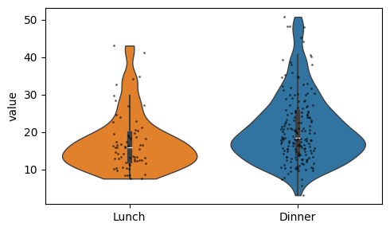

df = sns.load_dataset('tips').dropna()
df.shape(244, 7)| total_bill | tip | sex | smoker | day | time | size | |
|---|---|---|---|---|---|---|---|
| 0 | 16.99 | 1.01 | Female | No | Sun | Dinner | 2 |
| 1 | 10.34 | 1.66 | Male | No | Sun | Dinner | 3 |
| 2 | 21.01 | 3.50 | Male | No | Sun | Dinner | 3 |
| 3 | 23.68 | 3.31 | Male | No | Sun | Dinner | 2 |
| 4 | 24.59 | 3.61 | Female | No | Sun | Dinner | 4 |
def plot_hist(
df:DataFrame, # dataframe containing the values to plot
x:str, # numeric column name
figsize:tuple=(6, 2), # figure size in inches
data:NoneType=None, y:NoneType=None, hue:NoneType=None, weights:NoneType=None, # Vector variables
stat:str='count', bins:str='auto', binwidth:NoneType=None,
binrange:NoneType=None, # Histogram computation parameters
discrete:NoneType=None, cumulative:bool=False, common_bins:bool=True, common_norm:bool=True,
multiple:str='layer', element:str='bars', fill:bool=True, shrink:int=1, # Histogram appearance parameters
kde:bool=False, kde_kws:NoneType=None,
line_kws:NoneType=None, # Histogram smoothing with a kernel density estimate
thresh:int=0, pthresh:NoneType=None, pmax:NoneType=None, cbar:bool=False, cbar_ax:NoneType=None,
cbar_kws:NoneType=None, # Bivariate histogram parameters
palette:NoneType=None, hue_order:NoneType=None, hue_norm:NoneType=None,
color:NoneType=None, # Hue mapping parameters
log_scale:NoneType=None, legend:bool=True, ax:NoneType=None, # Axes information
):
Plot a histogram with a KDE overlay and polygon bins.
Plot horizontal counts from a value-count series.
def plot_bar(
df:DataFrame, # long-form dataframe
value:str, # numeric column name
group:str, # grouping column name
title:str | None=None, # optional plot title
figsize:tuple=(12, 5), # figure size in inches
fontsize:int=14, # axis label and tick size
dots:bool=True, # whether to overlay strip dots
rotation:float=90, # x tick rotation angle
ascending:bool=False, # sort group means ascending when True
ymin:float | None=None, # optional lower y-axis bound
data:NoneType=None, x:NoneType=None, y:NoneType=None, hue:NoneType=None, order:NoneType=None,
hue_order:NoneType=None, estimator:str='mean', errorbar:tuple=('ci', 95), n_boot:int=1000, seed:NoneType=None,
units:NoneType=None, weights:NoneType=None, orient:NoneType=None, color:NoneType=None, palette:NoneType=None,
saturation:float=0.75, fill:bool=True, hue_norm:NoneType=None, width:float=0.8, dodge:str='auto', gap:int=0,
log_scale:NoneType=None, native_scale:bool=False, formatter:NoneType=None, legend:str='auto', capsize:int=0,
err_kws:NoneType=None, ci:Deprecated=<deprecated>, errcolor:Deprecated=<deprecated>,
errwidth:Deprecated=<deprecated>, ax:NoneType=None
):
Plot a bar chart from an unstacked dataframe.
def plot_group_bar(
df:DataFrame, # wide-form dataframe
value_cols:list, # numeric columns to melt into grouped bars
group:str, # grouping column preserved during melt
figsize:tuple=(12, 5), # figure size in inches
order:NoneType=None, # optional x order passed to seaborn
title:str | None=None, # optional plot title
fontsize:int=14, # axis label and tick size
rotation:float=90, # x tick rotation angle
data:NoneType=None, x:NoneType=None, y:NoneType=None, hue:NoneType=None, hue_order:NoneType=None,
estimator:str='mean', errorbar:tuple=('ci', 95), n_boot:int=1000, seed:NoneType=None, units:NoneType=None,
weights:NoneType=None, orient:NoneType=None, color:NoneType=None, palette:NoneType=None, saturation:float=0.75,
fill:bool=True, hue_norm:NoneType=None, width:float=0.8, dodge:str='auto', gap:int=0, log_scale:NoneType=None,
native_scale:bool=False, formatter:NoneType=None, legend:str='auto', capsize:int=0, err_kws:NoneType=None,
ci:Deprecated=<deprecated>, errcolor:Deprecated=<deprecated>, errwidth:Deprecated=<deprecated>, ax:NoneType=None
):
Plot grouped bars after melting multiple value columns.
def plot_stacked(
df:DataFrame, # dataframe containing the stacked categories
group:str, # x-axis categorical column
hue:str, # stacked hue column
figsize:tuple=(5, 4), # figure size in inches
xlabel:str | None=None, # x-axis label override
ylabel:str | None=None, # y-axis label override
add_value:bool=True, # whether to annotate total counts
kwargs:VAR_KEYWORD
):
Plot stacked counts for a categorical column.
def plot_violin(
df:DataFrame, # long-form dataframe with value and group columns
value:str='value', # numeric column name
group:str='variable', # grouping column name
ylabel:str | None=None, # optional y-axis label override
dots:bool=True, # whether to overlay strip dots
figsize:tuple=(5, 3), # figure size in inches
kwargs:VAR_KEYWORD
):
Plot violin plots with optional strip dots.

def plot_box(
df:DataFrame, # long-form dataframe
value:str, # numeric column name
group:str, # grouping column name
title:str | None=None, # optional plot title
figsize:tuple=(6, 3), # figure size in inches
fontsize:int=14, # axis label and tick size
dots:bool=True, # whether to overlay strip dots
rotation:float=90, # x tick rotation angle
data:NoneType=None, x:NoneType=None, y:NoneType=None, hue:NoneType=None, order:NoneType=None,
hue_order:NoneType=None, orient:NoneType=None, color:NoneType=None, palette:NoneType=None, saturation:float=0.75,
fill:bool=True, dodge:str='auto', width:float=0.8, gap:int=0, whis:float=1.5, linecolor:str='auto',
linewidth:NoneType=None, fliersize:NoneType=None, hue_norm:NoneType=None, native_scale:bool=False,
log_scale:NoneType=None, formatter:NoneType=None, legend:str='auto', ax:NoneType=None
):
Plot a box plot ordered by the group median.
def plot_pie(
value_counts:Series, # categorical counts
hue_order:list[str] | None=None, # explicit slice order
labeldistance:float=0.8, # distance of labels from the center
fontsize:int=12, # label font size
font_color:str='black', # label font color
palette:str='tab20', # seaborn palette name
figsize:tuple=(4, 3), # figure size in inches
):
Plot a pie chart from a value-count series.
Plot vertical counts with labels above the bars.
Calculate within-bin percentages for a stacked composition chart.
| sex | female | male |
|---|---|---|
| class | ||
| First | 43.518519 | 56.481481 |
| Second | 41.304348 | 58.695652 |
| Third | 29.327902 | 70.672098 |
def plot_composition(
df:DataFrame, # source dataframe
bin_col:str, # binned x-axis column
hue_col:str, # stacked hue column
palette:dict | list | str='tab20', # colors passed to get_plt_color
legend_title:str | None=None, # legend title override
rotation:float=45, # x tick rotation angle
xlabel:str | None=None, # x-axis label override
ylabel:str='Percentage', # y-axis label override
figsize:tuple=(5, 3), # figure size in inches
):
Plot stacked percentages for a bin-by-category composition.